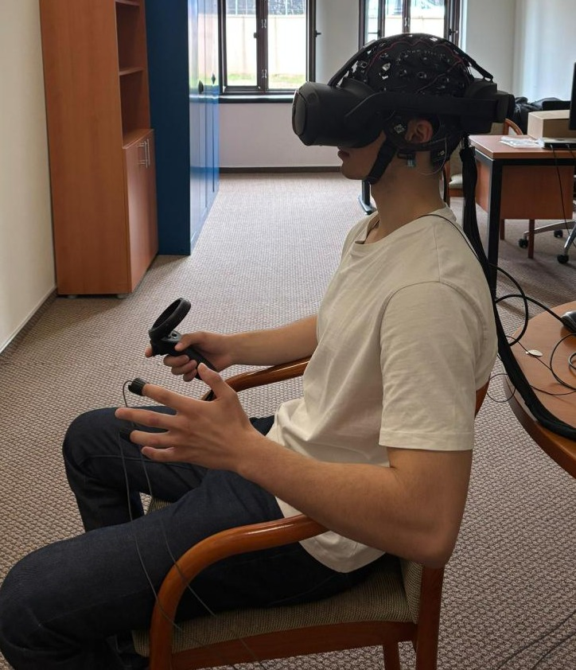

Cybersickness Araştırma Deneyi
Bu deney, IUI Lab bünyesinde, sanal gerçeklik ortamlarında yaşanan cybersickness (siber tutma) etkilerini araştırmak amacıyla yürütülmektedir. Deneye katılarak bilimsel çalışmamıza katkıda bulunabilirsiniz.

Deney Detayları
Süre:
75 – 90 dakika
Yaş Aralığı:
18 – 35 yaş
Tarihler:
Şubat – Mart 2026
Konum:
IUI Lab, SNA Z04
Ödül / Teşvik:
—
Deney Akışı
1. Başlangıç Anketleri
MSSQ ve Pre-SSQ anketleri doldurulur.
~2–3 dk
2. VR Oturumları
4 oturum × ~5 dk VR video. Rahatsızlık seviyesi anlık olarak
işaretlenir.
3. Dinlenme Araları
Her oturum sonrası minimum 5 dk dinlenme + kısa SSQ anketi.
4. Biyofizyolojik Veri
EEG, ECG, GSR ve pupil verileri kaydedilir.
Sürekli
Katılım Koşulları
- 18 yaş ve üzeri olmalısınız
- Migren, vertigo veya denge bozukluğu gibi nörolojik/vestibüler rahatsızlıklarınız olmamalıdır
- Epilepsi tanınız olmamalıdır
- Düzeltilmiş görme keskinliğiniz yeterli olmalıdır (gözlük/lens kullanabilirsiniz)
- Son 24 saat içinde alkol tüketmemiş olmalısınız